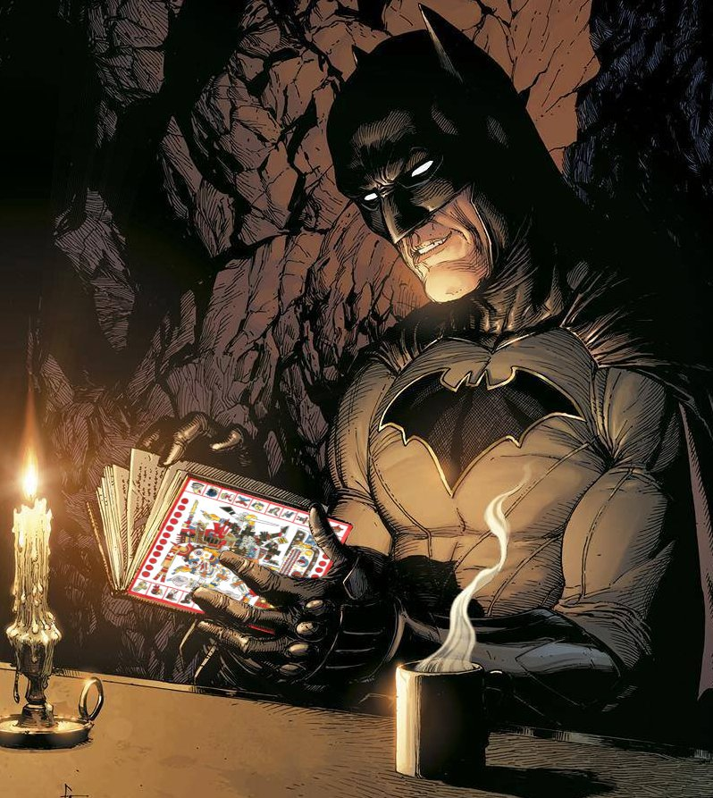

Alias: Batman
Nombre real: Bruce Wayne
Fecha de nacimiento: 19 de febrero de 1939
Perfil Profesional Ejecutivo visionario con doble vida: líder corporativo y vigilante nocturno. Experto en combate cuerpo a cuerpo, estrategia táctica, criminología y tecnología avanzada. Amplia experiencia en liderazgo bajo presión, resolución de crisis, manejo de recursos de alto nivel y protección de la ciudad frente a amenazas complejas.

Bruce Wayne, un joven traumatizado por el asesinato de sus padres, se embarca en un viaje de venganza y justicia. Tras años de entrenamiento en artes marciales y criminología, regresa a Gotham City como Batman, un vigilante enmascarado que lucha contra el crimen y la corrupción. Con la ayuda de aliados como Alfred Pennyworth y Jim Gordon, se enfrenta a villanos icónicos como el Joker, el Pingüino y Catwoman, mientras busca redimir su pasado y proteger a los inocentes. A lo largo de los años, Batman se convierte en un símbolo de esperanza y justicia, enfrentando no solo amenazas externas, sino también sus propios demonios internos.
Estudions de ingenieria, psicologia, negocios y derecho
Fundador de Wayne Enterprises, transformando la empresa en un líder tecnológico y filantrópico. Desarrollador de tecnología avanzada utilizada en la lucha contra el crimen. Reconocido por su liderazgo en la Liga de la Justicia, colaborando con otros héroes para enfrentar amenazas globales. Inspiración para generaciones de héroes y defensores de la justicia.
Actualizado el 6 de junio por Jorge ❤️

**Made by Jorge Quiros**